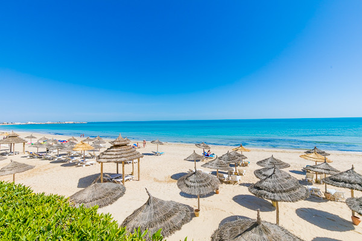
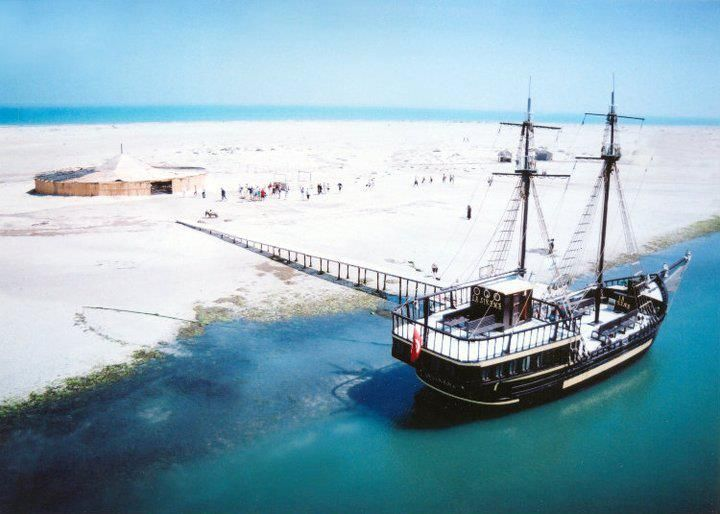
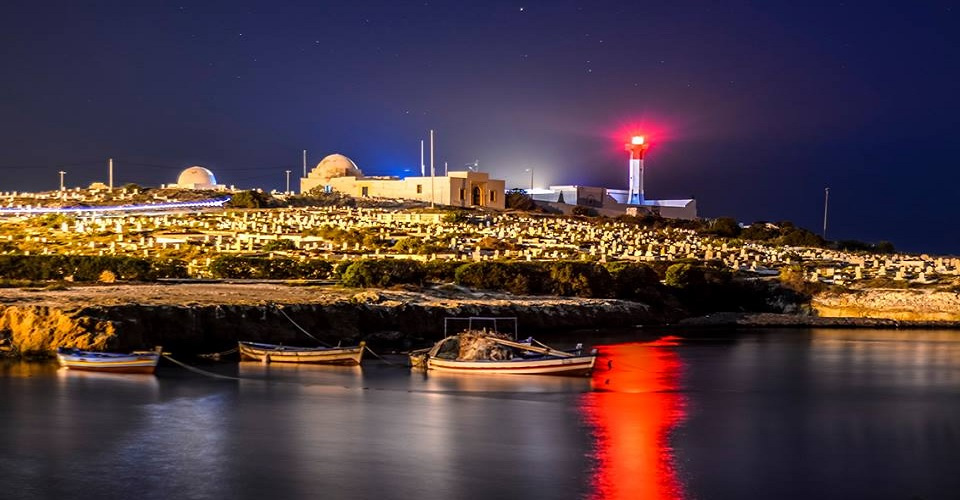
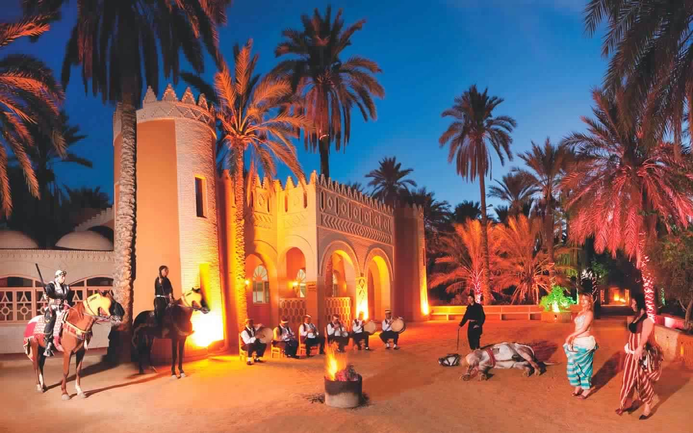

-
Explore Zarzis
Explore Zarzis
Zarzis is a small coastal town in southeast Tunisia, just south of the Ile de Jerba (Island of Djerba). With its stretch of Mediterranean coastline, good beaches and busy port it is a growing tourist destination mixing the traditional with the progressive.
-
Explore Djerba
Explore Djerba
Djerba is the kind of easygoing resort that sums up island living. Just five kilometers off Tunisia's southern coast, this island idyll's gently sloping, sandy beaches and perfect Mediterranean climate have made it a favorite stop for tourists looking for a winter beach break.
-
Explore Mahdia
Explore Mahdia
Mahdia is small city which keeps its original traditions, where the women cover themselves with gold jewelry and the houses are decorated with embroidered hangings. Its monumental gateway calls back to its glorious past: it was the first capital of the great Fatimid dynasty, who would go on to reign in Egypt and Syria.
-
Explore Tozeur
Explore Tozeur
Tozeur is a Tunisian city on the borders of the Atlas and the Sahara Desert, the largest of the five oases in the Jerid. Gradually built around its palm grove, it is the capital of the governorate of the same name.